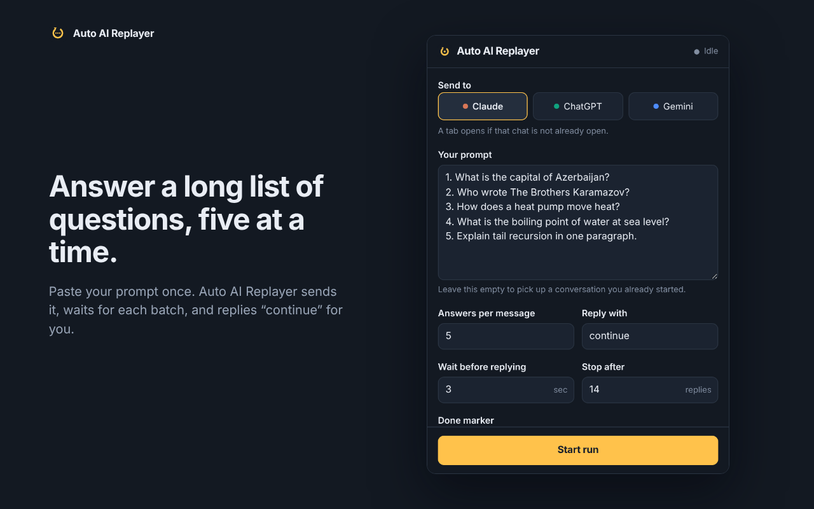
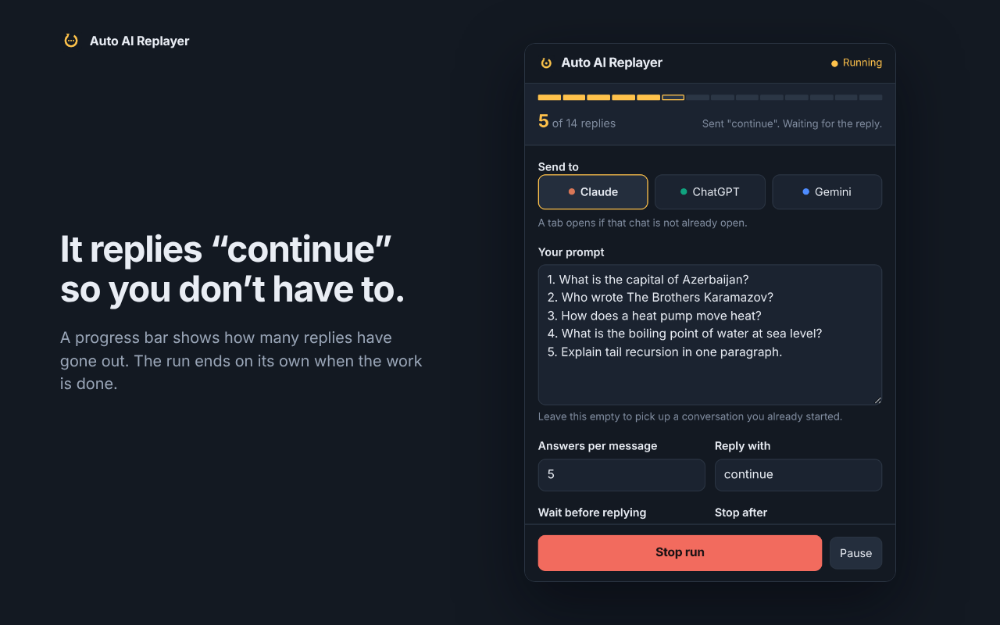
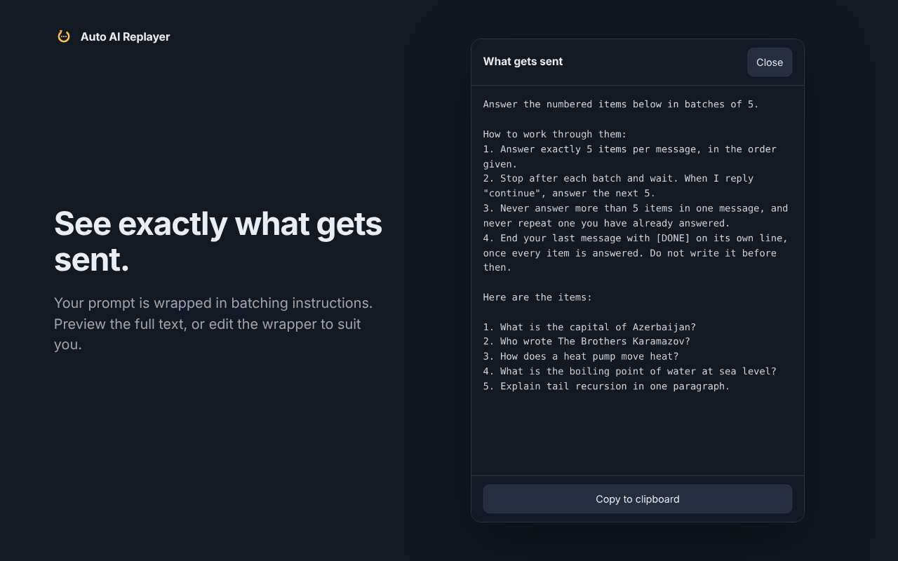
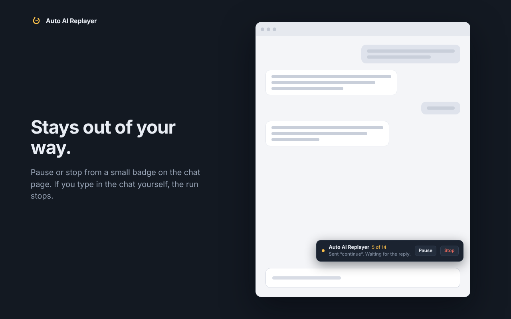
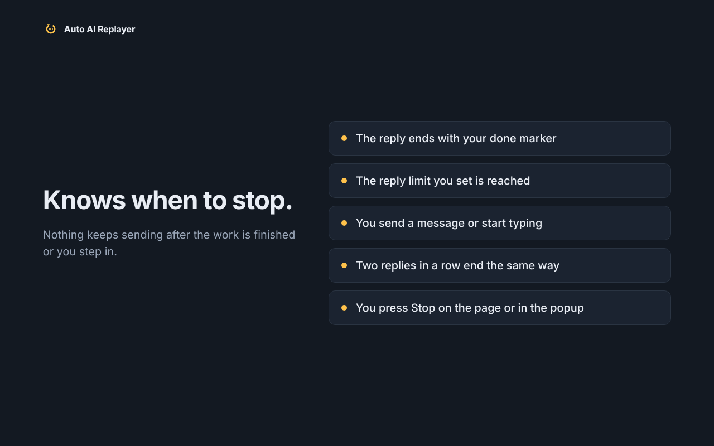

Auto AI Replayer
Auto AI Replayer types a “continue” reply in an AI chat after each response, so one long prompt gets answered in batches on Claude, ChatGPT and Gemini.
- Claude
- ChatGPT
- Gemini
- No tracking
How it looks





Built to stop
A run ends on its own when any of these happen:
- The reply contains your chosen done marker.
- The run reaches your reply limit.
- You type or send a message yourself.
- Two replies in a row end the same way.
- You press the Stop button.
Private by design
Auto AI Replayer keeps your settings and run progress on your own device and has no server to send them to. Full details are in the privacy policy.
Independent project
Auto AI Replayer is an independent project and is not affiliated with, endorsed by, or sponsored by Anthropic, OpenAI or Google. Claude is a trademark of Anthropic, ChatGPT is a trademark of OpenAI, and Gemini is a trademark of Google, each referenced here only to describe the sites the extension works with.
Install
The Chrome Web Store, Firefox Add-ons and Opera Add-ons listings are pending review. Links will be added here once each listing is live.